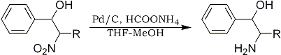

Abstract
An account of recent developments on selective reduction of several important functional groups by catalytic transfer hydrogenation using ammonium formate and palladium or nickel is presented. This includes reduction of nitro alcohols, α,β-unsaturated nitroalkenes, quinoline and isoquinoline, carbonyl functionalities, carbon-carbon double bond in conjugation to carbonyl, sulfonyl and phosphonate moieties, and epoxides. Deoxygenation of heteroaromatic N-oxides and deprotection of 1,3-dibenzyluracils have also been addressed.
Reduction is one of the most fundamental and useful reactions in organic synthesis. Though reduction of an isolated functional group can be carried out conveniently with a number of reagents, selective reduction of one functionality in presence of other such functional groups with a minimum damage to the sensitive portions of a molecule is a frequent problem in organic synthesis. Thus, development of selective, mild and effective reducing agents is still an area of considerable interest. Conventional hydrogenation procedure although often offers selective reduction under mild conditions, it requires a special set of apparatus and is always associated with the usual risks of using hydrogen gas. Catalytic transfer hydrogenation process offers a viable alternative to it providing greater experimental convenience and avoiding these disadvantages and hazards. These reactions are usually carried out with a hydrogen source in presence of a metal catalyst, such as palladium on carbon, nickel(0) etc. through a simple operation. A number of compounds including cyclohexene, cyclohexadiene, formic acid, phosphoric acid and ammonium formate have been used as possible in situ hydrogen sources; however, ammonium formate is most convenient and efficient. An excellent review1 on catalytic transfer hydrogenation using ammonium formate as a hydrogen source has been made in 1988 which includes the selective reductions of azide, hydrazone, nitrile, dehalogenation of aromatic chlorocarbons, deprotection of ortho-benzyl group etc. and thus the present review will cover the developments in this area during the last ten years.
Stereoselective reduction of nitro alcohol
Fig. 1
a. R = CH2OTHP ; b. R = CH3
The stereoselective synthesis of β-amino alcohols is of considerable interest in organic synthesis as β-amino alcohols constitute useful synthons to many important heterocycles. Ammonium formate in THF-MeOH solvent in presence of 10% palladium on charcoal efficiently reduces β-nitro alcohols to the corresponding β-amino alcohols at room temperature in high yields2. The reactions are stereospecific and proceed with retention of configuration. Thus, syn-nitro alcohols 1a and 1b are converted to syn-amino alcohols 2a and 2b.
Table 1
Reduction of Unsaturated Nitroalkenes to Oximes
Nitroalkene |
Time |
Oxime |
Yield |
1-Nitrocyclohexene | 6 h |
Cyclohexanone | 58% |
Phenyl-2-Nitropropene | 0.3 h |
Phenyl-2-propanone | 94% |
3,4-Dimethoxy- Phenyl-2-Nitropropene | 0.5 h |
3,4-Dimethoxy- Phenyl-2-Propanone | 86% |
1-(2-Thienyl)- 2-Nitropropene | 18 h |
1-(2-Thienyl)- 2-Propanone | 84% |
3-Methoxy-4-Hydroxy- Phenyl-2-Nitropropene | 0.5 h |
3-Methoxy-4-Hydroxy- Phenyl-2-Propanone | 70% |
4-Bromo- Phenyl-2-Nitropropene | 2.5 h |
4-Bromo- Phenyl-2-Propanone | 34% |
Usually, such reductions are carried out by hydrogenation over Raney nickel or platinum3, but these procedures require elevated pressures and temperatures.
Reduction of
α,β-unsaturated nitroalkenes
α,β-Unsaturated nitroalkenes are readily reduced to the corresponding oximes in good yields using ammonium formate in the presence of palladium4. The reactions occur rapidly at room temperature in a solvent system of methanol and tetrahydrofuran. A series of nitroalkenes are subjected to this procedure and the results are summarized in Table 1.
Reduction of heterocyclic ring in quinoline and isoquinoline
Reduction of quinoline and related heterocyclic compounds to the corresponding tetrahydro derivatives is an important transformation in organic synthesis as they have gained considerable importance in the total synthesis of natural products5 as well as in medicinal chemistry6. Ammonium formate/palladium on carbon has been found to be a convenient system for selective reduction of the heterocyclic ring in quinoline and isoquinoline derivatives7. The reduction of representative examples of quinolines and isoquinolines are shown in Table 2. Quinoline itself is reduced readily, however, isoquinoline is reduced much less efficiently. These reductions by conventional catalytic hydrogenation require high pressures8.
Reduction of carbonyl and other functional groups
Table 3
Reduction of Aryl Ketones
to Alcohols
| Ketone | Time | Yield |
| m-PhO-PhCOMe | 5 h | 90% |
| PhCOMe | 3 h | 91% |
| PhCOCH2Me | 3 h | 92% |
| p-MeO-PhCOMe | 4.2 h | 90% |
| p-t-Bu-PhCOEt | 4.5 h | 91% |
Reduction of carbonyl functionality is widely used in organic synthesis. Although, there are numerous reagents available for this reduction, reagent for selective reduction in presence of other groups is well appreciated. Ammonium formate in combination with Raney nickel in methanol solvent efficiently reduces the aryl ketones, while alkyl ketones are inert to this condition9. The results of reduction of a number of aryl ketones are summarized in Table 3.
Table 4
Reduction of Carbonyl, Nitrile,
Azide, Imine and Nitro Groups
| Substrate | Time |
Product | Yield |
| PhCOMe | 5 h | PhCH(OH)Me | 97% |
| Cyclohexanone | 12 h | Cyclohexanol | 78% |
| PhCH=CHCHO | 8 h | PhCH=CHCH2OH | 92% |
| PhCH=CHC(=O)Me | 18 h |
PhCH=CHCH(OH)Me | 72% |
| PhCH2CN | 24 h | No reaction |
|
| p-Me-PhSO2N3 | 5 h | p-Me-PhSO2NH2 | 97% |
| p-MeO-PhCH=N-Ph | 14 h | p-MeO-PhCH2NH-Ph | 73% |
| PhC(=O)COOMe | 8 h | PhCH(OH)COOMe | 83% |
| p-NO2-PhMe | 12 h | p-NH2-PhMe | 68% |
Recently, the scope of this reaction has been broadened tremendously using Ni(0)10. Ammonium formate in the presence of Ni[P(OPh)3]4 as catalyst in acetic acid or methanol reduces various organic functional groups. Unsaturated aldehydes and ketones undergo selective reduction of the carbonyl moiety. The double bond in ethyl cinnamate is not reduced by this catalyst. Aromatic nitro compounds, sulfonyl azides, imines etc. also undergo reduction under these conditions. All the reactions proceed in high yields. The results are reported in Table 4.
Reduction of the double bond in conjugation to carbonyl moiety
The selective reduction of double bond in conjugated carbonyl compound is a challenging task because of the competing reduction process of carbonyl functionalities. Ram and Spicer11 reported the reduction of double bond in conjugated carboxylic ester with ammonium formate in combination with 5% Pd on charcoal in acetic acid at 110�C. The reactions are very rapid and high-yielding. Conjugated nitriles are also reduced to the corresponding saturated compounds by this procedure. The results are summarized in Table 5. A possible mechanism for this transfer hydrogenation is proposed as in Scheme 1.
Table 5
Reduction of a α,β-Unsaturated Esters and
Nitriles to the Corresponding Saturated Analogs
| Substrate | Time (min) |
Product | Yield |
| Me-CH=CH-CO2Et | 8 | Me-CH2CH2CO2Et | 91% |
| Ph-CH=CH-CO2Et | 8 | Ph-CH2-CH2CO2Et | 92% |
| Ph-CH=CHCONH2 | 10 | PhCH2CH2CONH2 | 65% |
| (Ph-CH=CH)2CO | 10 | (Ph-CH2CH2)2CO | 88% |
| Ph-CH=CHCN | 10 | PhCH2CH2CN | 92% |
Scheme 1
Rao and Reddy demonstrated a stereoselective reduction of the double bond in cyclic conjugated ketones using HCOONH4 and 10% Pd/C in refluxing methanol12. It is noteworthy that, for some substrates, the observed stereoselectivity is different from that in conventional hydrogenation. The results are presented in Table 6.
Ranu and Sarkar highlighted the regioselective reduction of C=C bond conjugated to carbonyl group by catalytic transfer hydrogenation13. Representative examples of conjugated aldehyde, ketone, carboxylic acid and ester are found to undergo exclusive hydrogenation at the α,β-unsaturated position leaving the other double bond present elsewhere in the molecule, unaffected. The reductions are quite fast and the yields are almost quantitative. The results are summarized in Table 7.
Regioselective reduction of epoxides
The reduction of an unsymmetrically substituted epoxide can produce either a more-substituted or a less-substituted alcohol depending on the mode of attack at less-substituted or more-substituted carbon atom. 1,2-Epoxides are regioselectively reduced at the less-substituted end by ammonium formate in the presence of a palladium on charcoal to provide the corresponding more-substituted alcohol in high yield14. The results are presented in Table 8. Of the epoxides examined, those containing polar functional groups were reduced more rapidly than simple aliphatic compounds. Glycidic epoxides were also reduced efficiently. It is noteworthy that styrene oxide provided the less-substituted alcohol in contrast to all other epoxides.
Chemoselective reduction of α,β-unsaturated sulfones and phosphonates
The reduction of α,β-unsaturated sulfones and phosphonates to the corresponding saturated analogs constitutes a useful process as these compounds are of great importance in the studies of biological systems as well as in synthetic strategy. Surprisingly, there are only a few methods available in the literature for effecting the reduction of the carbon-carbon double bond in α,β-unsaturated sulfones and phosphonates. These reductions are usually carried out under high pressure hydrogenation; however recently, a binuclear palladium complex, [(t-Bu2PH)PdP-t-Bu2]2 has been used for carrying out the hydrogenation at 1 atm of hydrogen15. Although this method is quite satisfactory, the operation is not very straightforward and the reagent is costly and also not easily accessible. A simple method has been developed for this reduction using ammonium formate and palladium-charcoal (10%) in methanol at room temperature by our group16. The carbon-carbon double bond in several structurally varied sulfones and phosphonates underwent hydrogenation to give the corresponding saturated compounds in high yields by this procedure. The results are summarized in Table 9. The reactions are very clean and no side-products were isolated. The substituents on the aromatic ring apparently do not have any influence on the course of hydrogenation.
Deoxygenation of heteroaromatic N-oxides
A facile and efficient deoxygenation of heteroaromatic N-oxides into the respective bases has been achieved using catalytic transfer hydrogenation with ammonium formate as the hydrogen source, in the presence of palladium on carbon17. The reaction is carried out in methanolic solution and in most cases the reaction is over within 1�20 min at room temperature. Several reducible substituents such as methoxycarbonyl, methoxyl, carboxyl and cyano remain unchanged, however, nitro or halo groups are readily reduced or eliminated under the reaction conditions. The results with a variety of N-oxides are presented in Table 10. This procedure offers an attractive alternative to other methods available for the reduction of N-oxides. The advantages are: the avoidance of strong acid media and harsh reagents, the ease of manipulation, very mild conditions of the reaction, and excellent yields for a wide variety of N-oxides.
Regioselective deprotection of 1,3-dibenzyluracils
A regioselective N-1 deprotection of 1,3-dibenzyluracils has been accomplished by ammonium formate in methanol in the presence of 10% Pd-C on charcoal at reflux18. However, longer reaction time provided completely debenzylated products. Debenzylation of thiouracil does not occur probably because of the catalyst inactivation by the sulfur.
Conclusion
The discussions in this review certainly establishes that catalytic transfer hydrogenation is a very efficient process for reduction under mild conditions. The combination of ammonium formate and palladium on carbon is very selective for reduction of a variety of important functional groups. Ammonium formate also has advantages of being readily available, inexpensive, stable and nontoxic. It is hoped that the present review will attract more attention to this area.